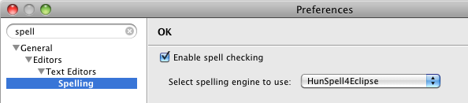
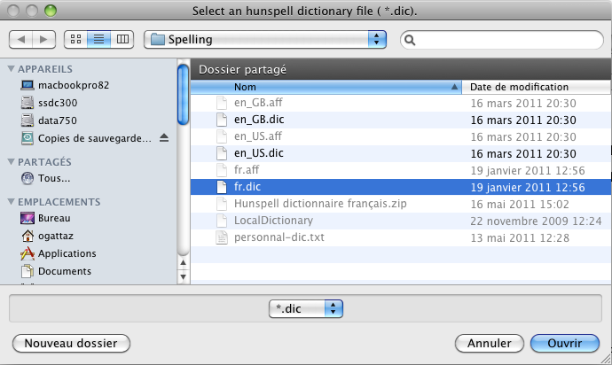
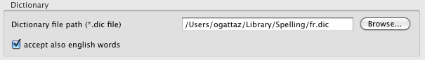
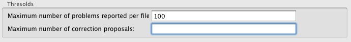
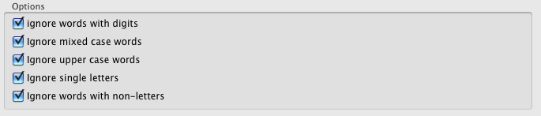
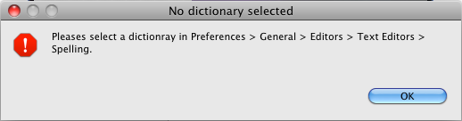
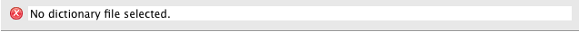
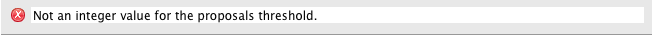

Installation and settings
Install
- Just install the plug-in as usually. (Probably already done that.)
- Fetch some hunspell (or myspell) dictionaries.
Some URLs:
- http://wiki.services.openoffice.org/wiki/Dictionaries
- https://wiki.mozilla.org/L10n:Dictionaries
- Put the dictionaries in a specialized directory (eg. in "/Users/xxx/Library/Spelling" on a Mac).
Preferences
- Navigate to: Windows - Preferences - General - TextEditors - Spelling
- Select Hunspell4Eclipse as the spelling engine.

- Hit browse, select the dictionary you want to use.

- If the directory containing the selected ".dic" file contains also an english one,
you can select the check-box allowing the english words acceptance..

- Set the thresolds

- Set the ignoring options

- Done.
Errors
- Each time the plug-in starts, if no dictionary file is selected you'll get this message :

- If no dictionary is selected

- If a not numeric value is set in the problems thresold field.

- If a not numeric value is set in the proposals thresold field
